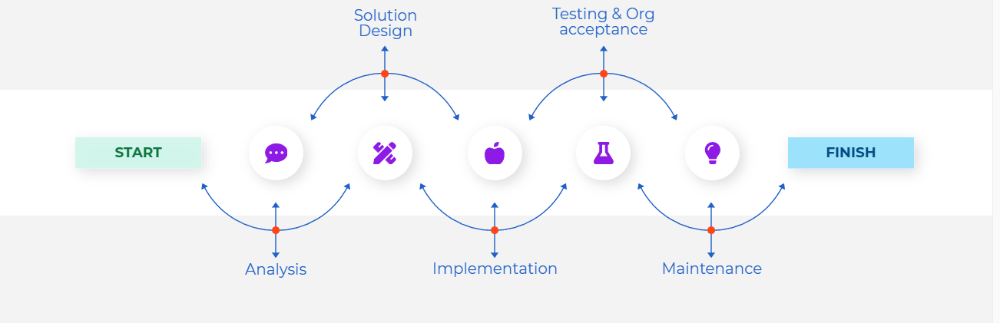

A Business Continuity Plan is a documented strategy that outlines how an organization will continue its critical business functions during and after a disaster or disruption. The BCP focuses on maintaining operations when infrastructure, personnel, or resources are partially unavailable.
In Level 3 you covered Disaster Recovery (DR) — the technical processes for restoring systems after a failure, including RTO, RPO, WRT, and MTD metrics. BCP is the broader organizational strategy that DR sits within. While DR focuses on restoring IT systems, BCP addresses the entire business: people, processes, communications, and alternate operating procedures.
Key components of a BCP include:

Developing a BCP manual ensures organizations have a structured approach to monitor, track, and improve their continuity capabilities. Keep in mind that different companies will implement a BCP differently, but they should be broadly similar in scope.
Incident response is the process of preparing for, detecting, containing, eradicating, and recovering from cybersecurity incidents or other disruptive events. A well-defined incident response plan complements the BCP by minimizing operational disruption and protecting organizational assets.
Effective incident response reduces the duration and impact of incidents, ensures faster recovery, and helps prevent similar events in the future. Prompt and structured responses can safeguard sensitive data, maintain customer trust, and minimize financial losses.
Security+ (SY0-701) lists the process as Preparation, Detection, Analysis, Containment, Eradication, Recovery and Lessons learned. NIST SP 800-61 groups the same work into four phases. The steps:
Integrating incident response with the BCP ensures that an organization can maintain essential services while addressing threats, resulting in greater operational resilience and minimized downtime.
Video: Professor Messer, "Incident Response – CompTIA Security+ SY0-701 – 4.8" (free Security+ course; SY0-701 is the current exam).
Ransomware is found on one file server. The team has confirmed it and knows which systems are affected. What comes next?
Contain first so it can't spread. Then eradicate (remove the cause), recover (restore from clean backups), and finally hold the lessons-learned review.
What is the difference between a business continuity plan and a disaster recovery plan?
Business continuity covers people, processes and communications. Disaster recovery is the IT part that restores systems and data.
Cybersecurity Curriculum | Level 4: Cybersecurity Essentials